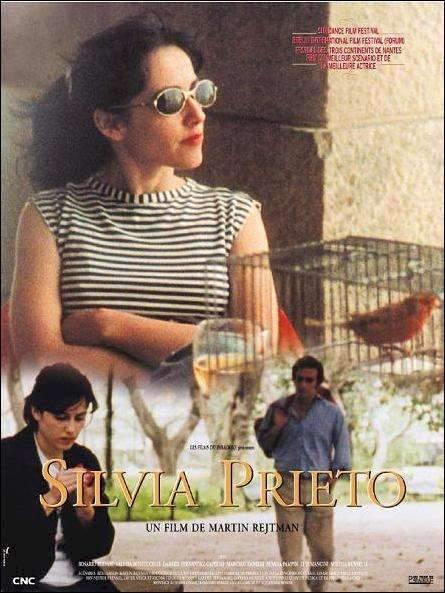

Silvia Prieto es una comedia argentina estrenada el 27 de mayo de 1999 escrita y dirigida por Martín Rejtman. Este fue el segundo largometraje del director.
La música estuvo a cargo de Vicentico y estuvo protagonizada por Rosario Bléfari, Valeria Bertuccelli, Vicentico, Marcelo Zanelli, Susana Pampín, Luis Mancini y Mirta Busnelli.
El film fue presentado en los festivales de Sundance, Berlín, San Sebastián, San Francisco, Miami, Munich, Londres, Viena, Karlovy Vary, Thessaloniki, La Habana, Toulouse y Nantes,
donde ganó los premios a mejor guión y a mejor actriz (Rosario Bléfari).